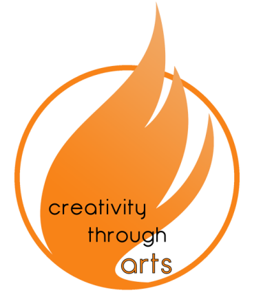
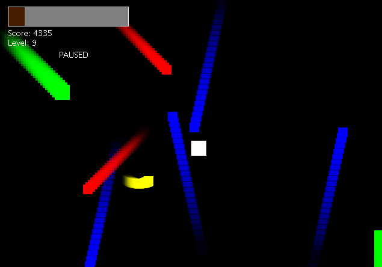

A BIT ABOUT MYSELF
Hello there! As you can probably tell by now, my name Stephen. As for a bit about myself, in short I am an aspiring computer scientist. It is funny because every year I seem to change professions. I began my high school life wanting to become an engineer, then to a marketer, then to an accountant, and now I think I have settled on a career as a developer. In my opinion, I would like to think that I like to learn as opposed to being indecisive haha. My thoughts on life are that you can never learn enough and that anything and everything that you learn could save you at some point down the road! So moral is learn, learn and learn your way to success!
Awards & Organizations
DECA: 6th in Province, Finalist at Internationals
FBLA: 1st in Province
E3 Business Challenge: 1st
Creativity Through Arts: Sponsorship + Web Dev
Project 5K: Event Coordinator
Notable: LeanGap Delegate, 6 Week Entrepreneurial Program
Hobbies
In my free time I like to sleep (somewhere between 12-24 hrs), eat (sweets yum) and play (sports and anime). Additionally, in my spare time I like to volunteer in the community. I believe in giving back in whichever way possible, that's why I've joined a couple of great organizations (Creativity Through Arts and Project 5K) that serve to better the GTA!
MY PROJECTS

My first project ever was a site for a youth council called Creativity Through Arts. The site was made using HTML, CSS and JQuery. The project proved to be quite a challenging feat at the time since I just started learning how to code but I learnt a lot while making the site so it was all worth it. Check it out at creativitythrougharts.org

My first game was a dodge random enemy game created in Java. It includes a menu, different difficulties and an item shop to boost your character. It was a good project to help improve my skills in the java language. I am now currently working on a second game which I hope will be done soon!
GET IN TOUCH
GITHUB
RESUME
GITHUB
RESUME